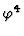

FINAL PROGRAM
I M A C S - A C A ' 9 8
The Fourth International IMACS Conference
on Applications of Computer Algebra
(IMACS = International Association for Mathematics and Computers in Simulation)
August 9-11, 1998
Czech Technical University
Hotel Krystal
Prague, Czech Republic
This conference is supported by The Ministry of Education of Czech Republic (Project PG 98213).
| Sat Night | Registration 19:00-21:00 | ||||
| Sun | Registration from 8:00 | ||||
| Morning | Welcome session 8:30-8:50 room A | ||||
| Room | A | B | C | D | E |
| Sun | GB | ODE | HEP | History | |
| Morning | GR | ||||
| Sun | GB | Edu | Dynam | Quantum | History |
| Afternoon | Approx | ||||
| Sun Night | Welcome party 18:30-21:30 | ||||
| Mon | Approx | Edu | Autodif | Control | Geom |
| Morning | AI | Robot | |||
| Mon | PSE | Edu | AI | Biolog | Geom |
| Afternoon | |||||
| Mon Evening | ACA business meeting from 18:00 room A | ||||
| Tue | Indust | Edu | Geom | Dynam | |
| Morning | Highper | ||||
| Tue | Highper | Geom | Dynam | ||
| Afternoon | |||||
| Session | Abbreviation | |
|---|---|---|
| 1. | Applications of Gröbner Bases | GB |
| 2. | Applications to Artificial Intelligence and
to Other Nonstandard Applications |
AI |
| 3. | Approximate Algebraic Computation | Aprox |
| 4. | Automatic Differentiation for Adjoint Codes Generation | Autodif |
| 5. | Computation in Algebra and Geometry | Geom |
| 6. | Computer Algebra Applications in Biology, Ecology and Medicine | Biology |
| 7. | Computer Algebra Methods in Integration and Symmetry Analysis of ODEs | ODE |
| 8. | Control Theory | Control |
| 9. | Dynamical Systems and Mechanics | Dynam |
| 10. | Education Meets Computer Algebra: A Double Challenge | Edu |
| 11. | General Relativity | GR |
| 12. | High Energy Physics | HEP |
| 13. | High Performance Symbolic Computing | Highper |
| 14. | History of Computer Algebra Applications | History |
| 15. | Industrial Applications | Indust |
| 16. | Problem Solving Environments | PSE |
| 17. | Quantum Theory | Quantum |
| 18. | Robotics | Robot |
| August 9, 1998 (Sunday Morning ) | |||||
| 8:30 am | A: ACA'98 Welcome session | ||||
| ROOM |
A |
B |
C |
D |
E |
| SESSION | APPLICATIONS OF GRÖBNER BASES Quoc-Nam Tran |
NO SESSION |
COMPUTER ALGEBRA METHODS IN INTEGRATION AND SYMMETRY ANALYSIS OF ODES F. Schwarz & V. Gerdt |
HIGH ENERGY PHYSICS D. Perret-Gallix & V. Edneral |
HISTORY OF COMPUTER ALGEBRA APPLICATIONS M. Grosheva & G.B. Efimov |
| 9:00 am | Computer Support for Inventing Gröbner Bases Theory Bruno Buchberger |
No talks |
Symbolic Computation of Approximate Symmetries for Ordinary Differential Equations Serge Andrianov |
Algebraic Computer Algorithms and Path Integral Methods Edwin J. Vargas Sanchez |
On Some Computer Algebra Applications in Bulgaria Margarita Spiridonova*, A. Gerov & Maria Nisheva-Pavlova |
| 9:30 am | Polynomial System Solving with Parameters: Gröbner Bases Specialization through Hilbert Functions M.-J. Gonzalez-Lopez, Laureano Gonzalez-Vega, Carlo Traverso & Alberto Zanoni |
Applications of Computer Algebra to Gasdynamic Problems of Ballistic Alain Carriere* & Louis-Remi Oudin* |
Optimizing the Process of Production of Crystals for LHC Serge S. Bityukov |
The History of Computer Algebra Application in Mechanics in Russia (Soviet Union) Georgy B. Efimov* & Marina V. Grosheva |
|
| 10:00 am | Solving Systems of Nonlinear Algebraic Equations by Using the Gröbner Walk Method and Its Improvements Quoc-Nam Tran |
The Automatic Investigation of the ODEs of Nonlinear Elasticity Peter Vafeades |
CompHEP - Integrated Computer Algebra System for Calculation in High Energy Physics Victor F. Edneral |
||
| 10:30 am | BREAK | ||||
| SESSION | GENERAL RELATIVITY T. Wolf & S. Klioner |
||||
| 11:00 am | Gröbner Bases in Fractional Polynomial Rings and their Applications Giuseppa Carra'-Ferro |
Invariants of Ordinary Differential Equations Matthias Berth |
Facilities for General Relativity in Macsyma Richard J. Petti |
Experience of Development and Usage of Packages of Symbolic Computations Intended for Investigation of Mechanical Systems Andrej V. Banshchikov, Larissa A. Bourlakova*, Galina N. Ivanova, Valentin D. Irtegov, Mikhal A. Novichov & Tatyana N. Titorenko |
|
| 11:30 am | On Algorithmic Desingularization of Hypersurfaces Gabor Bodnar & Josef Schicho |
Involution and Lie Symmetry Analysis of Differential Equations Vladimir Gerdt |
Two Applications of Macsyma in General Relativity Richard J. Petti |
Computer Algebra at Keldysh Institute Georgy B. Efimov*, I.B. Tshenkov & E. Yu. Zueva |
|
| 12:00 pm | Systems of Laurent Polynomial Equations and Gröbner Bases Franz Pauer |
A Package for Computation with Indexed Objects within Mathematica and its Applications to Metric Gravity Theories Sergei Klioner |
Survey Georgy B. Efimov |
||
| 12:30 pm | Simplifications of Tensor Expressions and Computations with Kerr-Schild Metrics Nikolay N. Vassiliev |
Discussion |
|||
| 1:00 pm | LUNCH | ||||
| August 9, 1998 (Sunday Afternoon ) | |||||
| ROOM |
A |
B |
C |
D |
E |
| SESSION | APPLICATIONS OF GRÖBNER BASES Quoc-Nam Tran |
EDUCATION MEETS COMPUTER ALGEBRA: A DOUBLE CHALLENGE I B. Kutzler |
DYNAMICAL SYSTEMS AND MECHANICS I V. Edneral & N. Vassiliev |
QUANTUM THEORY L. Kocbach |
HISTORY OF COMPUTER ALGEBRA APPLICATIONS M. Grosheva & G.B. Efimov |
| 2:00 pm | Factor-SAGBI Bases: a Tool for Computations in Subalgebras of Factor Algebras Patrik Nordbeck |
The TI-92 as a Vehicle for Teaching Algebraic Thinking Edward Miller* & Laura Bracken* |
Computer Algebra and Problems of Motion Stability Andrej V. Banshchikov & Larissa A. Bourlakova* |
The Perturbed Eigenvalue Problem and its Application to the Resolution of the Schrödinger Equation by a kP Perturbation Method Claude-Pierre Jeannerod*, Nicolas Maillard & Eckhard Pflügel |
Discussion |
| 2:30 pm | Sparse Structual Gröbner Basis Detection Karin Gatermann |
Computer Algebra and Education. Examples of Exercises with the Help of MAPLE Frederique Barkats |
The Usage of the system MATHEMATICA in some Problems of Mechanics Valentin D. Irtegov* & Tatyana N. Titorenko |
Symbolic-Numeric Codes and Computer Algebra Systems Ladislav Kocbach |
|
| 3:00 pm | Functional Decomposition and Gröbner Basis Jaime Gutierrez & Rosario Rubio San Miguel |
Symbolic Maximum Likelihood Estimation with MATHEMATICA Colin Rose & Murray Smith* |
Symbolic-Numeric Investigations for Stability Analysis of Lagrange Systems Sergey Gutnik |
Generation of Numerical Codes for Evaluation of Atomic Scattering Quantities by Computer Algebra Systems Imad Ladadwa |
|
| 3:30 pm | BREAK | ||||
| 4:00 pm | Using Gröbner Bases and Invariant Theory to Check a Conjecture in Celestial Mechanics Ilias Kotsireas |
Error Correcting Codes with DERIVE for Windows Peter Schofield |
Formal Integral and Symplectic Mapping Nikolay N. Vassiliev |
Molecular Orbital Integrals using MAPLE in MATLAB Junbai B. Wang |
|
| 4:30 pm | Practical Computations with Gröbner Bases Daniel Lichtblau |
IDA: an Interactive Document on Algebra Arjeh M. Cohen |
Constructing Some Classes of Specialized Numerical ODE. Integrators by Means of Computer Algebra Systems Nikolay N. Vassiliev* & Nikolay O. Kirsanov |
Computer algebra systems as a tool for computer proofs in quantum logic theory Miroslav Hamouz & Mirko Navara* |
|
| SESSION | APPROXIMATE ALGEBRAIC COMPUTATION I M. Noda & T. Sasaki |
||||
| 5:00 pm | Approximate Algebraic Computation - IMACS 98 David Rupprecht |
Symbolic Computations with Algebraic Numbers Hans-Gert Graebe |
Symplectification of Truncated Maps for Hamiltonian Systems Serge N. Andrianov |
TE and TM Dynamics of Semiconductor Lasers with Tensile and Compressive Strained Quantum Wells S. V. Voitikov* & R. Kragler |
|
| 5:30 pm | Computation of Approximate Polynomial Gcds and an Extension Victor Y. Pan |
The Integration of Ordinary Differential Equations: Factorization and Transformations Lev M. Berkovich |
|||
| 6:30 pm | Welcome Party (until 9:30 pm) | ||||
| August 10, 1998 (Monday Morning ) | |||||
| ROOM |
A |
B |
C |
D |
E |
| SESSION | APPROXIMATE ALGEBRAIC COMPUTATION II M. Noda & T. Sasaki |
EDUCATION MEETS COMPUTER ALGEBRA: A DOUBLE CHALLENGE II B. Kutzler/T. Jebelean |
AUTOMATIC DIFFERENTIATION FOR ADJOINT CODES GENERATION C. Faure |
CONTROL THEORY P. Dorato & C. Abdallah |
COMPUTATION IN ALGEBRA AND GEOMETRY I A.V. Mikhalev, A.A. Mikhalev & G.F. Pilz |
| 8:30 am | Accuracy Analysis of Hybrid Rational Interpolation Hiroshi Kai* & Matu-Tarow Noda |
Teaching Basic Concepts in Analysis with Dynamical Geometry Programs Stefan Welke |
Reduction of Storage of Variables in Automatic Computation of Adjoint Code Mohamed Tadjouddine |
Applications of Quantifier Elimination Software to Control System Design: An Overview Peter Dorato |
Parallel Poly-Pushdown Automatic Groups Gilbert Baumslag |
| 9:00 am | Approximate Multivariate Factorization and Its Time Complexity Kosaku Nagasaka & Tateaki Sasaki* |
Solving Systems of Linear Equation with the TI-92 - An Example for the Scaffolding Method Bernhard Kutzler |
Generation of the Adjoint Code of the Meteorological Model Meso-NH Isabelle Charpentier |
Solving LMI and BMI Problems by Quantifier Elimination Hirokazu Anai |
Computations in Free Groups Alexei Myasnikov |
| 9:30 am | Remarks on Automatic Algorithm Stabilization Kiyoshi Shirayanagi* & Moss Sweedler |
Complex Application of CA / ICS in High-Tech Engineering Education Ladislav Drska*, Richard Liska & Milan Sinor |
Using TAMC to Generate Efficient Adjoint Code Ralph Giering & Thomas Kaminski* |
Application of QEPCAD Software to Stabilization of Continuous-Time Polynomial Systems Mats Jirstrand & Dragan Nesi'c |
Category of Representations of Elementary Knowledge B. Plotkin & Tatjana Plotkin* |
| 10:00 am | Approximate Implicitation of Rational Surfaces Laureano Gonzalez-Vega* & I. Necula |
Visualizing Mathematics and Mathematical Processes A. Israel Weinzweig |
Hierarchical Approach to Automatic Differentiation Marco Mancini |
Application of Mixed QE/Probabilistic Methods for Nonlinear Feedback Design Chaouki T. Abdallah |
Optimal Parametrization of Algebraic Curves Franz Winkler |
| 10:30 am | BREAK | ||||
| SESSION | ROBOTICS J. Pfalzgraf |
||||
| 11:00 am | ``Approximate Zero-points'' of Univariate Polynomial with Small Error Terms Akira Terui* & Tateaki Sasaki |
Computer Algebra in Teaching Chemistry: a Package for Balancing Chemical Equations (MAPLE) Juan Llovet & Carlos Esebbag* |
Joys and Pains of Implementing the Reverse Mode of Automatic Differentiation by Overloading Uwe Naumann |
Some Geometric and Computer Algebra Aspects on Modeling Robot Arms Jochen Pfalzgraf |
Determining Coordinates for Polynomial Algebras Jie-Tai Yu |
| SESSION | APPLICATIONS TO ARTIFICIAL INTELLIGENCE AND TO OTHER NONSTANDARD APPLICATIONS I E. Roanes-Lozano |
||||
| 11:30 am | Cancellation Errors in Multivariate Resultant Computation with Floating-Point Numbers Tateaki Sasaki* & Tomoyuki Sato |
Computer Algebra Systems in Applied Mathematics Education: Experiences and Future Directions Peder Thusgaard Ruhoff |
Railway Interlocking Systems and Gröbner Bases Eugenio Roanes-Lozano*, Luis M. Laita & Eugenio Roanes-Macias |
A Practical Implementation of an Algorithm for Decomposing Sine-Cosine Equations with Parametric Coefficients Jaime Gutierrez |
Computation of Standard Bases of Ideals of Free Noncommutative Algebras Alexander A. Mikhalev* & Andrej A. Zolotykh |
| 12:00 pm | Use of Formulae Bases in Teaching and Learning Mathematics (MATHEMATICA) Margarita Spiridonova |
Structural Modeling of Internal Combustion Engines with Maple V Andrey Sokolov |
|||
| 12:30 pm | LUNCH | ||||
| August 10, 1998 (Monday Afternoon ) | |||||
| ROOM |
A |
B |
C |
D |
E |
| SESSION | PROBLEM SOLVING ENVIRONMENTS J. Johnson & S. Steinberg |
EDUCATION MEETS COMPUTER ALGEBRA: A DOUBLE CHALLENGE III B. Kutzler/M. Rayes |
APPLICATIONS TO ARTIFICIAL INTELLIGENCE AND TO OTHER NONSTANDARD APPLICATIONS II E. Roanes-Lozano |
COMPUTER ALGEBRA APPLICATIONS IN BIOLOGY, ECOLOGY AND MEDICINE N.I. Gurin, N.K. Zaitsev & V. Edneral |
COMPUTATION IN ALGEBRA AND GEOMETRY I A.V. Mikhalev, A.A. Mikhalev & G.F. Pilz |
| 2:00 pm | The Application Driven Ctadel Environment Robert van Engelen, Lex Wolters* & Gerard Cats |
Introducing and Implementing CAS into Pre- and Inservice Education and Training Yasar Ersoy |
Boole's Logic Revisited from Computer Algebra. A Partial Validation of Boole's Inference Procedures Luis M. Laita, Luis de Ledesma*, Eugenio Roanes-Lozano & Aurora Purez |
Methods of Computer Algebra for Deciding the Incorrect Problems in Chemical Technologies Nikolai I. Gurin* & G.F. Pinaev |
Linear Recurring Sequences over Rings and Modules Alexander V. Mikhalev* & Alexander A. Nechaev |
| 2:30 pm | SciNapse: A Problem Solving Environment Stanly Steinberg |
Should Students Do Algebra when Computer Algebra Systems Can Do it for Them? Paul Strickland & Dhiya Al-Jumeily* |
Simplification for the Laplace-Beltrami Operator Shigekazu Nakagawa*, Hiroki Hashiguchi & Naoto Niki |
Computing Threshold Conditions for Models of Infectious Diseases with Reinfections Paul Milligan & Andreas Weber* |
Computation of Multivariable Differential Dimension Polynomials Alexander Levin |
| 3:00 pm | Perspectives on Integrating Mathematics and Software Richard Petti |
The Use of Computer Algebra in a Step-by-step Solution of Problems (MAPLE) Eno Tonisson |
"Brainy" Functions in DERIVE Johannn Wiesenbauer |
Fractal Time Series Analysis and Predictions for Tumor Spreading Margarita V. Voitikova, presented by N.Gurin* |
Graded Codes Justo Peralta Lopez |
| 3:30 pm | BREAK | ||||
| 4:00 pm | Numerical Simulations by Symbolic Computations? Gustav Amberg |
Chances and Risks of Heuristic Reasoning: Some Examples using DERIVE Johann Wiesenbauer |
Approximate Bayesian Computations with Symbolic Integration Lubomir Soukup |
Using a Symbol Transformation System Maple for Modeling of Soiling Atmosphere Nikolai I. Gurin* & V.L. Kolesnikov |
On the complexity of the Solution of Polynomial Equations and Systems of Equations Victor Y. Pan |
| 4:30 pm | Wrapping Computer Algebra Components with Java and CORBA Wolfgang Kuechlin |
Graphing Elementary Real Functions: What Can and Cannot Be Done with a CAS (MAPLE) Eberhard H.A. Gerbracht* & Werner Struckmann |
On the Computation of the Greatest Common Divisor of Multivariate Polynomials with Straight-Line Programs Raquel Martinez*, J. Llovet & B. Castano |
Matrix Mappings Preserving Diedonne Determinant and their Algorithmic Constructions Elena Kreines |
|
| 5:00 pm | PSE Construction using Software Components Bruce Char, Jeremy Johnson* & Lakshman |
Should Recursion Be Part of the Secondary Student's Mathematics Toolbox? Antonio Quesada |
A CAS Aid in the Elaboration of the Expert System Supporting the Managing the Monolithic Construction Process Magdalena Hajdasz & Adam Marlewski* |
Graded Mappings of Frobenius Type and their Algorithmic Constructions Alexander Gouterman |
|
| 5:30 pm | Using Theorema for Mathematical Education (MATHEMATICA) Bruno Buchberger & Tudor Jebelean* |
||||
| 6:00 pm | A: ACA Business Meeting | ||||
| August 11, 1998 (Tuesday Morning ) | |||||
| ROOM |
A |
B |
C |
D |
E |
| SESSION | INDUSTRIAL APPLICATIONS S. Stifter |
EDUCATION MEETS COMPUTER ALGEBRA: A DOUBLE CHALLENGE IV B. Kutzler/P. Schofield |
COMPUTATION IN ALGEBRA AND GEOMETRY II A.V. Mikhalev, A.A. Mikhalev & G.F. Pilz |
DYNAMICAL SYSTEMS AND MECHANICS II V. Edneral & N. Vassiliev |
NO SESSION |
| 8:30 am | Industrial Design Aided by Computer Algebra Arjeh M. Cohen |
The Computer Classroom Lecture Bill Pletsch |
Polynomial Arithmetic mod p using DERIVE Johannn Wiesenbauer |
Computer Algebra of Vector Bundles and Complex Foliations of Polynomial Dynamical Systems Nikolaj M. Glazunov |
No talks |
| 9:00 am | Polynomial System Solving for Industrial Problems: A Report from the FRISCO Project Laureano Gonzalez-Vega |
Computer Algebra Support for Dynamical System Study
(MAPLE) Vasiliy Govorukhin* & V. Tsybulin |
Polynomial Multivariate Decomposition Jaime Gutierrez & Rosario Rubio San Miguel* |
Systems of Nonlinear and Algebraic Nonlinear Ordinary Differential Equations Giuseppa Carra'-Ferro |
|
| SESSION | MATHEMATICA: Q&A | ||||
| 9:30 am | CGAL: A Library for Flexible Geometric Computing Remco Veltkamp |
Composite Algorithms in the Teaching of Mathematical Methods (AXIOM) Brian Dupee*, Raquel Martinez & Santiago Tapia |
On Computing the Weierstrass Points of a Plane Algebraic Curve Mark Heiligman & Emil Volcheck* |
On Initial Value Problems for Ordinary Differential-Algebraic Equations F. Leon Pritchard* & William Sit* |
Come to this session if you have questions, want to learn about new features or looking for a job at Wolfram Research Inc. Quoc-Nam Tran & Daniel Lichtblau |
| 10:00 am | The Algebraic Under Constraint Solver as a Design Tool Hiroyuki Sawada |
On the Applicability of Intelligent Computer Algebra Systems in Mathematics Education Maria Nisheva-Pavlova |
Computation of Moduli, Periods and Modular Symbols Nikolaj Glazunov |
||
| 10:30 am | BREAK | ||||
| SESSION | HIGH PERFORMANCE SYMBOLIC COMPUTING AND CHALLENGES OF COMPUTER ALGEBRA I L. Bernardin |
||||
| 11:00 am | Towards Computing the Composition Factors of Permutation Groups of Degree 100,000,000 John Cannon |
How To Create Textbooks With Live Mathematics Using LaTeX Richard D. Jenks |
An Approach to Computing the Action of Steenrod Squares on the Cohomology of Polyhedral Simplicial Sets Rocio Gonzalez-Diaz & Pedro Real Jurado |
Calculations and Applications of Newton Polyhedrons Alexander B. Aranson |
|
| 11:30 am | Data-flow Multithreaded Parallelism in Computer Algebra Algorithms Jean-Louis Roch, Thierry Gautier*, Jean-Guillaume Dumas & Gilles Villard |
Using DERIVE in Deriving the Numerical Quadrature Formulas Adam Marlewski |
The Involutive Gröbner Walk Oleg Goloubitsky |
Construction of Doubly Periodic Solutions via the Poincare-Lindstedt Method in the Case of Massless  TheorySergey Yu. Vernov |
|
| 12:00 pm | Solving the Six-Line Problem with the Dixon Resultant Robert Lewis* & George Nakos |
CAS, Educational Microworlds, and the Internet Nurit Zehavi |
Weight Characteristics of Linear Recurrences and Linear Codes over Galois Rings A.S. Kuzmin & Alexander A. Nechaev* |
Automata Network Dynamical Systems for Construction of Fractal Objects Vasily M. Severyanov |
|
| 12:30 pm | LUNCH | ||||
| August 11, 1998 (Tuesday Afternoon ) | |||||
| ROOM |
A |
B |
C |
D |
E |
| SESSION | HIGH PERFORMANCE SYMBOLIC COMPUTING AND CHALLENGES OF COMPUTER ALGEBRA II L. Bernardin |
NO SESSION |
COMPUTATION IN ALGEBRA AND GEOMETRY II A.V. Mikhalev, A.A. Mikhalev & G.F. Pilz |
DYNAMICAL SYSTEMS AND MECHANICS II V. Edneral & N. Vassiliev |
NO SESSION |
| 2:00 pm | Challenges of Symbolic Computation: My Favorite Open Problems Erich Kaltofen |
No talks |
Software MAGNUS Presentation G. Baumslag & A. Myasnikov |
Generalized Normal Forms by Relegation Andre Deprit, Jesus Palacian Subiela, Etienne Deprit* & J.-F. San Juan |
No talks |
| 2:30 pm | Symbolic Computation of the Periodic Solutions of the Barbanis-Contopoulos System by the Lindstedt-Poincare method Benbachir Saad |
||||
| 3:00 pm | Correct and Useful Simplification of Complex-valued Functions - What can be Done? Rob Corless |
On Structure Preserving Normal Forms of Hamiltonian Dynamical Systems J. Mikram & Fouad Zinoun* |
|||
| 3:30 pm | BREAK | ||||
| 4:00 pm | Towards High-Performance Symbolic Computing in MuPAD: Multi-Polynomial Quadratic Sieve using Macro Parallelism and Dynamic Modules Thomas Metzner, Manfred Radimersky, Andreas Sorgatz* & Stefan Wehmeier* |
Round Table: Open problems in computer algebra and geometry |
Normal Form Method and Approximated Solutions ODEs till the 4th Order Dimension Victor F. Edneral |
||
| 4:30 pm | Constructing Fast Algorithms: The Computational Approach Laurent Bernardin |
Discussion |
|||
| 5:00 pm |
|
||||
| 5:30 pm |
|
||||